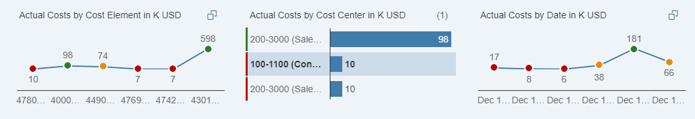

Visual Filter Setup
An intuitive way of choosing filter values from an associated measure value. It supports line, bar, and donut chart types.
Use visual filter to combine measures or item counts with filter values. Chart visualization increases the joy of use and the faster perception of relevant data. Selecting one or several chart data points allows quick analysis of the data set. For example, to choose the country with the highest sales, you can visualize the graphic and make a selection on it. The default view of visual filter bar is based on the filter fields defined in the SelectionFields annotation for which a visual filter is defined.
Configuring the property sap:value-list=fixed-values in the annotation.xml file to display visual filter values in a dropdown list. This allows users to select or de-select values that are not displayed on the chart. If dropdown is enabled, ensure the records available in the collection path entity set of visual filter and compact filter are same for smooth sync between visual filter and compact filter.
Hover over each action for a description. Click the action for more information.
ValueList Annotation
The following is an example of a value list annotation code snippet for configuring visual filters. For more information, see Defining Valuelist Annotation.
PresentationVariantQualifier
<Annotation Term="PresentationVariantQualifier" Qualifier="FilterNumberOfSalesOrdersByStatus">
<Record>
<PropertyValue Property="Text" String="Filter: Number of Sales Ordery by Status"/>
<PropertyValue Property="SortOrder">
<Collection>
<Record Type="Common.SortOrderType">
<PropertyValue Property="Property" PropertyPath="NumberOfSalesOrders"/>
<PropertyValue Property="Descending" Bool="true"/>
</Record>
</Collection>
</PropertyValue>
<PropertyValue Property="Visualizations">
<Collection>
<AnnotationPath>@UI.Chart#FilterNumberOfSalesOrdersByStatus</AnnotationPath>
</Collection>
</PropertyValue>
</Record>
</Annotation>
Chart Annotation
<Annotation Term="UI.Chart" Qualifier="FilterNumberOfSalesOrdersByStatus">
<Record Type="UI.ChartDefinitionType">
<PropertyValue Property="Title" String="Sales Orders by Status"/>
<PropertyValue Property="Description" String="Number of Sales Orders by Status"/>
<PropertyValue Property="ChartType" EnumMember="UI.ChartType/Donut"/>
<PropertyValue Property="Dimensions">
<Collection>
<PropertyPath>SalesOrderOverallStatus</PropertyPath>
</Collection>
</PropertyValue>
<PropertyValue Property="DimensionAttributes">
<Collection>
<Record Type="UI.ChartDimensionAttributeType">
<PropertyValue Property="Dimension" PropertyPath="SalesOrderOverallStatus"/>
<PropertyValue Property="Role" EnumMember="UI.ChartDimensionRoleType/Category"/>
</Record>
</Collection>
</PropertyValue>
<PropertyValue Property="Measures">
<Collection>
<PropertyPath>NumberOfSalesOrders</PropertyPath>
</Collection>
</PropertyValue>
<PropertyValue Property="MeasureAttributes">
<Collection>
<Record Type="UI.ChartMeasureAttributeType">
<PropertyValue Property="Measure" PropertyPath="NumberOfSalesOrders"/>
<PropertyValue Property="Role" EnumMember="UI.ChartMeasureRoleType/Axis1"/>
<PropertyValue Property="DataPoint" AnnotationPath="@UI.DataPoint#NumberOfSalesOrders"/>
</Record>
</Collection>
</PropertyValue>
</Record>
</Annotation>
Chart Type
|
The Chart Type… |
Displays… |
|---|---|
|
Bar |
Top or bottom three records |
|
Line |
First or last six data points |
|
Donut |
Top or bottom two records |
Chart Title
ALP displays chart titles in the following order: <Measure Name> by <Dimension Name> in <Scale factor> <UoM>
- <Measure Name> indicates the measure associated with the chart. Use sap:label()
- <Dimension Name> indicates the dimension associated with the chart. Use sap:label()
- <Scale Factor> indicates the scale as specified using the
ScaleFactor property of the
DataPoint annotation associated with the measure
displayed in the
chart.
<Annotation Term="com.sap.vocabularies.UI.v1.Chart" Qualifier="qualifier1"> <Record Type="UI.ChartDefinitionType"> <PropertyValue Property="Title" String="My Chart" /> <PropertyValue Property="ChartType" EnumMember="UI.ChartType/Column" /> <PropertyValue Property="Measures"> <Collection> <PropertyPath>ActualCosts</PropertyPath> </Collection> </PropertyValue> <PropertyValue Property="Dimensions"> <Collection> <PropertyPath>CostElement</PropertyPath> </Collection> </PropertyValue> <PropertyValue Property=”MeasureAttributes”> <Collection> <Record Type="UI.ChartMeasureAttributeType"> <PropertyValue Property="Measure" PropertyPath="ActualCost"/> <PropertyValue Property="DataPoint"> <AnnotationPath>@UI.DataPoint#Qualifier1</AnnotationPath> </PropertyValue> <PropertyValue Property="Role" EnumMember="UI.ChartMeasureRoleType/Axis1" /> </Record> </Collection> </PropertyValue> <PropertyValue Property="DimensionAttributes"> .... .... .... </Record> </Annotation>
Annotation: SelectionFields
Define the SelectionFields annotation to sort the order of fields displayed in the visual filters. If there are any mandatory filter fields that are not specified in the SelectionFields, then these fields appear first, followed by the other entries in the SelectionFields.
<Annotation Term="UI.SelectionFields">
<Collection>
<PropertyPath>DeliveryCalendarYear</PropertyPath>
<PropertyPath>SoldToParty</PropertyPath>
<PropertyPath>Product</PropertyPath>
<PropertyPath>MainProductCategory</PropertyPath>
<PropertyPath>DeliveryCalendarQuarter</PropertyPath>
</Collection>
</Annotation>
Text Arrangement
|
Text Arrangement Type |
Description |
|---|---|
|
TextFirst |
Is the default type that has sap:text first followed by ID within brackets. For example, "Notebook (001)" |
|
TextLast |
ID followed by sap:text within brackets. For example, "001(Notebook)". |
|
TextOnly |
Shows only sap:text. For example, "Notebook" |
|
TextSeparate |
Show only ID . For example, "002" |
Unit of Measure with Multiple Currencies
Visual filter charts do not show up if the backend returns data with multiple Unit of Measure (UoM). To achieve a single UoM, set the required UoM in the filter bar, or normalizing all the UoM into one UoM in the backend.
For currency based visual filter values, the currency value could come from another filter field in the main entity set (mapped to the value help currency field based entity set through the standard IN mapping). If this kind of mapping exists with an empty filter field in the main entity set, ALP defaults the value set through the DisplayCurrency field in the incoming navigation context (see note below on DisplayCurrency) for filtering the value help entity set to render the visual filter chart.
If there exists a parameter in the main entity set with exact technical name P_DisplayCurrency, the value is derived from the incoming DisplayCurrency field of the incoming navigation context.
Semantic Coloring for Visual Filter Measure Values
-
Criticality in DataPoint annotation. The value specified, or the value returned from a path determines the color
-
CriticalityCalculation in DataPoint annotation, along with improvement direction and various threshold values. This is applicable only when criticality is not defined.
